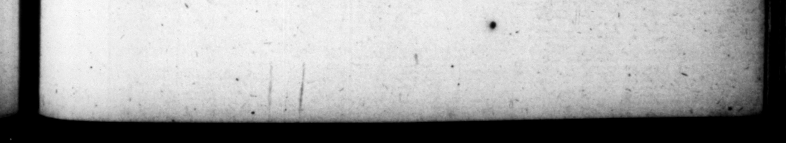

= So os THAN RETSST HTTS —_—— << -. —- 7, . 7; SS T x . —_—_ wy Wy WW —_ ww YT = ww > Akt Al. 4 AD. oct. — NERO-CLAUDIUS CESAR 287 capitis ſui fieret: ſed ut quomodo, totus cremaretur. Permiſit hoc Icelus Galbe libertus, non multo ante vinculis exſolutus, in que primo tumultu cunjectus «<0 50. Funeratus eſt impenſa ducentorum millium, ſtragulis alhis auro intextis, quibus uſus Kalendis Januariis fue rat. Reliquias Ecloge & Alexandra nutrices cum Acte concubina gentili Domitio rm monumento condiderunc uod proſpicitur e campo ö — ſitum colli hortulorum. Ia eo monumento ſolium Porphyretic i marmoris, ſuperſtante Lunenſi an, Circumſeprum eſt lapide Thaſio. "II 51. Statura fuit, pen juſta corpore maculoſo & fœdo: ſuflavo capillo : vultu pulchro magis quam venuſto : oculis celiis & hebetioribns: cervice obeſa, ventre projecto gracillimis cruribus, valetudine roſpera. Nam qdi luxuir immoderatiſſimæ eſſet, ter omnins per xu annos languit: atque ita, ut neque vio, neque conſuetudine reliqua abſtineret. Circa cul tum habitumque adeo pudendus, ur comam ſemper in gradus formatam, peregrinatione Acha ica etiam pone verticem ſummiſerit tac plerumque lyntheſinam indutus ligato circum collum ſudario prodierit in publicum, ſine cinctu & diſcalceatus. 52. Liberales diſdiplinas omnes fere puer attigit. Sed à philoſophia. eum mater avertit : monens, imperaturo contratiam eſſe: à cognitione veterum ora torum Seneca præceptor, quo dintius in admiratione ſui detineret. Iraq; ad poet icam pronus carmina libenter ac ſine labore comment he bad tho he was extravage' tly wth ks h ad to any one, but that” bi body might be burnt entire by all means. And this Icelus the freed-man Galba tranted, wie bai but alittle jore been diſcharged from the ch een put under, at th: beginning of che troubles, | 50. The expences of his funeral 4. mounted to tw hundred thouſand ſeſterces ;.the bed upon which bis h wa, caried to the 2 and burnt being overiaid with a white c-worlets int wove wi h gold, which he bad made uſe of upon the Calend of Fanvary bejove, His nurſes Ecloge. and Altxandre with his cor cubine Ace la d up his relicks in the monument * the family. of the Donuitii, which is on the top of the hill overlooking the g dn, and is to be ſeen from the field of Mar. In that monumen: acofhn with an all ar of Porphyretic t marble of Luns over :ty 1s . encloſea within a w of Thaſian ſlone, 51. His ſtature was 3 little below the ordinary fine ; his body Jo ſpur as to mate 4 wile apand marke pearance; bis bair ſomewhat yell au, bs |, countenance fair rather than hundjome, e. yo grey and dull, bis ck fat, lly prom nent, legs very ſi „der, but his conſtitu ion very bealthf ul. For luxtrimes in his way of living, yet he had but hee ts Fekneſs i 4 caſe of fourteen | #4 Laa were ſo gen le, that he nei th r forbore the uſe of wine nor alter'd hu uſual way of living · In hs dr-ſs and %he care of bu perſ.n, he was fo ſh meleſi, that be had his hair cut In ri gs one above another, and when raw lung bebe was in Achaia let it hind, and appeared ab od for the mr jb part in the dreſs be uſed at table, with a handkerchief b ut his neck, hs coat looſe upon bim, ani without ſhes. 52 He was entered when 4 be in almoſt all the liberal ſciences, but us mother diverted him from the fludy of Philoſophy, as by no means ſuitabie to on that was to e empergr 5 and his maſter Seneca aſap him from wor __— orators, — he might him the longer in admiration of len elf. He "ee much addicted ta poetry, and compoſed ye ſes read an 90 2 Fou 4 FX ww { / , j
